스포츠·아웃도어 브랜드 116
나이키부터 파타고니아까지 운동, 장비, 아웃도어 문화를 만든 브랜드를 탐색합니다. 브랜드 아틀라스에 수록된 스포츠·아웃도어 브랜드 116개를 로고와 함께 모았습니다. 각 항목은 설립 배경, 브랜드 아이덴티티, 로고 변천, 제품과 서비스, 현재 상태를 정리한 상세 페이지로 이어집니다.
다른 산업 보기
기원 국가가 확인된 브랜드는 86개이며 미국 31개, 한국 10개, 이탈리아 8개, 영국 6개, 일본 6개 순으로 많습니다. 설립연도가 확인된 브랜드는 95개이며 가장 오래된 곳은 1845년, 가장 최근은 2023년에 시작했습니다. 시기별로는 1900년 이전 9개, 1900~1949년 22개, 1950~1999년 54개, 2000년 이후 10개입니다. 수록 자료로는 로고 이미지 111개, 로고 변천 자료 11개, 연혁 타임라인 32개를 갖췄습니다. 이 가운데 84개는 공식 웹사이트가 일치하는 위키데이터 개체로 연결해 두었습니다.
스포츠·아웃도어 브랜드 목록
품질 점수 순 상위는 로고 타일로, 나머지는 가나다순 목록으로 보입니다.
리복(Reebok)은 영국 볼턴에서 시작된 운동화·스포츠 의류 브랜드이다.
 뉴발란스New Balance미국 · 1906년
뉴발란스New Balance미국 · 1906년뉴발란스(New Balance)는 미국 보스턴에 기반을 둔 비상장 운동화·스포츠 의류 기업이다.
 나이키Nike
나이키Nike나이키는 스포츠용품보다 자기극복의 서사를 더 강하게 판매하는 브랜드다.
노스페이스(The North Face)는 1966년 미국에서 창립한 VF 코퍼레이션 산하의 아웃도어 의류·장비 브랜드이다.
 아디다스ADIDAS독일
아디다스ADIDAS독일아디다스(adidas AG)는 1949년 아디 다슬러(Adolf Dassler)가 독일 헤르초게나우라흐에서 설립한 스포츠웨어 기업으로…
 푸마Puma독일
푸마Puma독일푸마(Puma)는 독일 헤르초겐아우라흐에 본사를 둔 스포츠 의류·신발 기업이다.
 블랙야크Black Yak한국 · 1973년
블랙야크Black Yak한국 · 1973년블랙야크(BLACKYAK)는 BYN블랙야크가 운영하는 대한민국의 아웃도어 브랜드다.
 트랜스포트 포 그레이터맨체스터Greater Manchester Transport
트랜스포트 포 그레이터맨체스터Greater Manchester Transport트랜스포트 포 그레이터맨체스터(TfGM)는 잉글랜드 북서부 그레이터맨체스터 일대의 버스, 트램, 자전거 등 대중교통을 조정·운영하는 공공…
 보루시아 도르트문트Borussia Dortmund1909년
보루시아 도르트문트Borussia Dortmund1909년보루시아 도르트문트(BVB)는 1909년 창단된 독일 분데스리가 축구 클럽으로, 정식 명칭은 Ballspielverein Borussia 09…
 아크테릭스Arc'teryx캐나다 · 1989년
아크테릭스Arc'teryx캐나다 · 1989년아크테릭스(Arc'teryx)는 1989년 캐나다에서 창립한 아메르 스포츠 산하의 기술 중심 아웃도어 의류·장비 브랜드이다.
 카벨라스Cabela's미국 · 1961년
카벨라스Cabela's미국 · 1961년카벨라스(Cabela's)는 사냥·낚시·캠핑 등 아웃도어 레크리에이션 용품을 판매하는 미국 소매업체이다.
 런던 버스London Buses
런던 버스London Buses런던 버스는 영국 런던의 도시 대중교통을 담당하는 버스 운영 체계로, 교통 당국 산하에서 노선 기획과 서비스 기준을 관리한다.
 카트만두Kathmandu뉴질랜드 · 1987년
카트만두Kathmandu뉴질랜드 · 1987년카트만두(Kathmandu)는 1987년 뉴질랜드 크라이스트처치에서 설립된 아웃도어 의류·장비 브랜드이다.
 댈러스 트리니티 FCDallas Trinity FC
댈러스 트리니티 FCDallas Trinity FC댈러스 트리니티 FC는 텍사스주 댈러스를 연고로 2024년 출범한 댈러스 최초의 여자 프로축구단으로, 미국 USL 슈퍼리그에 참가한다.
 슬래진저Slazenger영국 · 1881년
슬래진저Slazenger영국 · 1881년슬래진저(Slazenger)는 1881년 영국 런던에서 설립된 스포츠용품 브랜드로, 현존하는 세계에서 가장 오래된 스포츠 브랜드 중 하나로…
 파타고니아Patagonia
파타고니아Patagonia파타고니아는 아웃도어 브랜드이면서 동시에 소비를 줄이라는 역설적 메시지로 신뢰를 쌓은 브랜드다.
 네덜란드 철도Nederlandse Spoorwegen
네덜란드 철도Nederlandse Spoorwegen네덜란드 철도(Nederlandse Spoorwegen, NS)는 네덜란드의 국영 철도다.
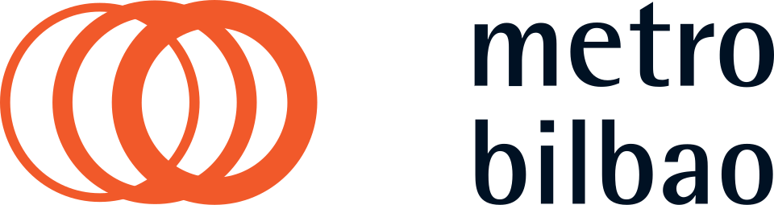
메트로 빌바오Metro Bilbao메트로 빌바오(Metro Bilbao)는 스페인 빌바오의 지하철로, 도시 재생 전략의 일환으로 건설돼 1995년 11월 개통했다.
 멕시코시티 메트로Mexico City Metro
멕시코시티 메트로Mexico City Metro멕시코시티 메트로(Sistema de Transporte Colectivo)는 1969년 9월 개통한 멕시코의 지하철이다.
 베이카우스리가Veikkausliiga1930년
베이카우스리가Veikkausliiga1930년베이카우스리가는 핀란드 축구 최상위 리그로 1990년 출범했다.
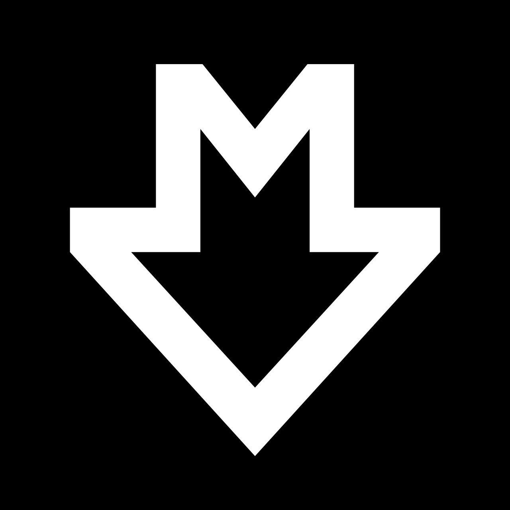
프라하 지하철Prague Metro1974년프라하 지하철(Pražské metro)은 사회주의 체코슬로바키아 시기인 1974년 5월 C선 개통으로 운행을 시작한 체코의 지하철이다.
 챔스스포츠Champs Sports1984년
챔스스포츠Champs Sports1984년챔스 스포츠(Champs Sports)는 운동화·스포츠 의류·용품을 판매하는 미국의 스포츠 소매 체인이다.
 모스크바 1980Moscow 1980
모스크바 1980Moscow 1980모스크바 1980(Moscow '80)은 사회주의권에서 처음 열린 1980년 모스크바 하계올림픽의 브랜드다.
 사라예보 1984Sarajevo 1984
사라예보 1984Sarajevo 1984사라예보 1984(Sarajevo '84)는 옛 유고슬라비아 사라예보에서 열린 1984년 동계올림픽의 브랜드로, 공산권 국가에서 처음 열린…
 캘거리 1988Calgary 1988
캘거리 1988Calgary 1988캘거리 1988(Calgary '88)은 캐나다 캘거리에서 열린 1988년 동계올림픽의 브랜드다.
 토트넘 홋스퍼 FCTottenham Hotspur1882년
토트넘 홋스퍼 FCTottenham Hotspur1882년토트넘 홋스퍼 FC는 1882년 창단된 잉글랜드 프리미어리그 소속 축구 클럽으로, 런던 북부를 연고로 한다.
 무니치Munich스페인 · 1939년
무니치Munich스페인 · 1939년무니치(Munich)는 측면 'X' 마크가 상징인 스페인의 스포츠화·스니커즈 브랜드이다.
 네파NEPA이탈리아 · 1996년
네파NEPA이탈리아 · 1996년네파(NEPA)는 1996년 이탈리아에서 시작해 2005년부터 한국에서 본격 전개된 아웃도어 브랜드다.
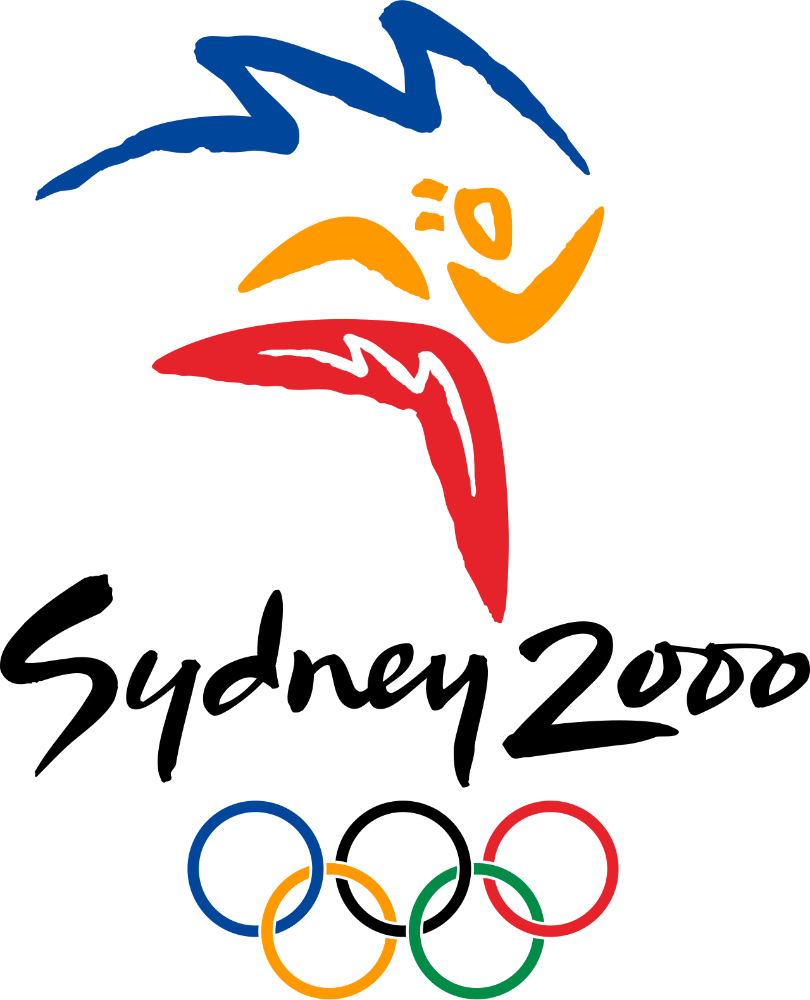
시드니 2000Sydney 2000시드니 2000(Sydney 2000)은 '새 천년의 올림픽'으로 불린 2000년 하계 올림픽의 브랜드다.
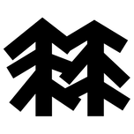
코오롱스포츠Kolon Sport한국 · 1973년코오롱스포츠(KOLON SPORT)는 코오롱인더스트리 FnC부문이 운영하는 대한민국의 아웃도어 브랜드다.
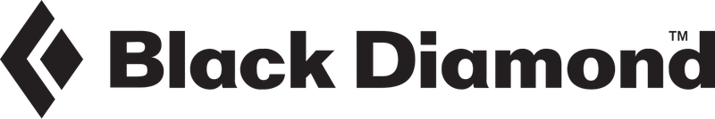
블랙다이아몬드Black Diamond Equipment미국 · 1989년Black Diamond Equipment는 미국 유타에 본사를 둔 클라이밍, 스키, 산악 스포츠 장비 제조업체이다.
 맥라렌McLaren영국 · 1963년
맥라렌McLaren영국 · 1963년맥라렌(McLaren)은 영국 서리주 워킹에 본사를 둔 모터레이싱 팀으로, 1963년 브루스 맥라렌이 설립했으며 현재 포뮬러 원에 참가하고…
 에이에스 어드벤처A.S.Adventure벨기에
에이에스 어드벤처A.S.Adventure벨기에에이에스 어드벤처(A.S.Adventure)는 벨기에의 선도적인 아웃도어 용품 소매 체인이다.
 써코니Saucony미국 · 1898년
써코니Saucony미국 · 1898년써코니(Saucony)는 미국의 운동화·스포츠 의류 브랜드이다.
 디아도라Diadora이탈리아 · 1948년
디아도라Diadora이탈리아 · 1948년디아도라(Diadora)는 1948년 설립된 이탈리아의 스포츠웨어·신발 제조 기업이다.
 컬럼비아 스포츠웨어Columbia Sportswear Company미국 · 1938년
컬럼비아 스포츠웨어Columbia Sportswear Company미국 · 1938년컬럼비아 스포츠웨어(Columbia Sportswear Company)는 미국 오레곤주 포틀랜드에 본사를 둔 글로벌 아웃도어 의류, 신발 및…
 로토 스포르트 이탈리아Lotto Sport Italia이탈리아 · 1973년
로토 스포르트 이탈리아Lotto Sport Italia이탈리아 · 1973년로토 스포르트 이탈리아(Lotto Sport Italia)는 이탈리아 트레비조 인근 트레비냐노에 본사를 둔 스포츠 용품 제조업체이다.
 디씨슈즈DC Shoes1994년
디씨슈즈DC Shoes1994년디씨슈즈(DC Shoes)는 스케이트보드와 스노보드 같은 액션 스포츠용 신발을 전문으로 하는 미국 브랜드이다.
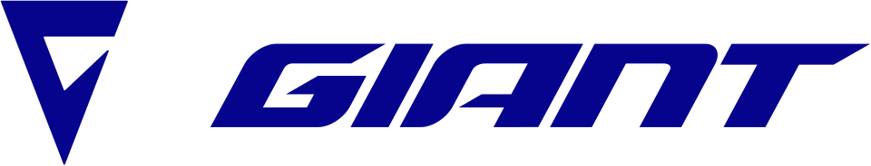
자이언트Giant Bicycles대만 · 1972년자이언트(Giant Bicycles)는 1972년 대만에서 설립된 자전거 설계·제조 기업이다.
 퀵실버Quiksilver미국 · 1969년
퀵실버Quiksilver미국 · 1969년퀵실버(Quiksilver)는 1969년 빅토리아주 Torquay에서 설립된 서핑 기반의 의류·액세서리 브랜드이다.
 팀버랜드The Timberland Company미국 · 1952년
팀버랜드The Timberland Company미국 · 1952년팀버랜드(The Timberland Company)는 미국의 아웃도어 신발·의류 제조 및 판매 브랜드이다.
 캘러웨이 골프 컴퍼니Callaway Golf Company미국 · 1982년
캘러웨이 골프 컴퍼니Callaway Golf Company미국 · 1982년캘러웨이 골프 컴퍼니(Callaway Golf Company)는 골프채와 골프공, 가방, 장갑, 캡 같은 액세서리를…
 알트라Altra Running미국 · 2009년
알트라Altra Running미국 · 2009년Altra Running은 로드 러닝, 트레일 러닝, 일상용 운동화를 설계·개발·마케팅·판매하는 미국의 신발 제조 기업이다.
 언더아머Under Armour미국 · 1996년
언더아머Under Armour미국 · 1996년언더아머(Under Armour)는 미국 메릴랜드주 볼티모어에 본사를 둔 스포츠웨어 기업이다.
 로드 FCROAD Fighting Championship한국 · 2010년
로드 FCROAD Fighting Championship한국 · 2010년로드 FC(ROAD Fighting Championship)는 대한민국을 기반으로 하는 종합격투기 대회 단체이다.
 룰루레몬Lululemon Athletica캐나다 · 1998년
룰루레몬Lululemon Athletica캐나다 · 1998년룰루레몬(Lululemon Athletica)은 1998년 캐나다 밴쿠버에서 설립된 기능성 스포츠웨어 브랜드이다.
 순토Suunto핀란드 · 1936년
순토Suunto핀란드 · 1936년순토(Suunto)는 1936년 설립된 핀란드의 기업으로, 스포츠 워치, 다이브 컴퓨터, 나침반, 정밀 기기를 제조하고 판매한다.
 아레나Arena이탈리아 · 1973년
아레나Arena이탈리아 · 1973년아레나(Arena)는 1973년 Horst Dassler가 Adidas 창업자의 아들로서 만든 이탈리아의 경기용 수영복 제조 회사이다.
전체 목록
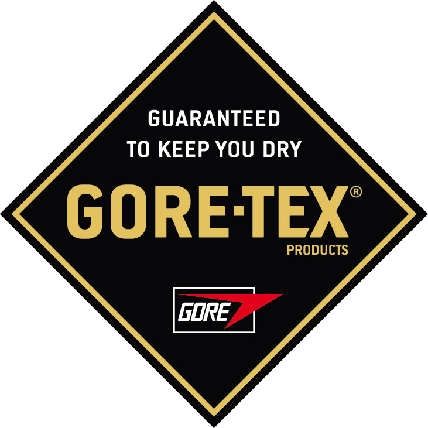
고어텍스 Gore-Tex고어텍스(Gore-Tex)는 미국 W.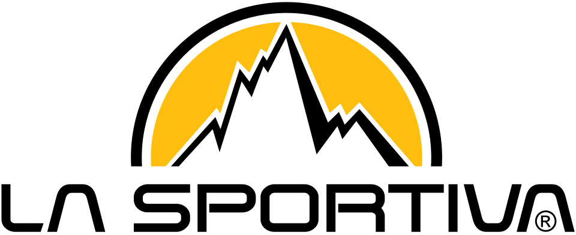
라 스포르티바 La SportivaLa Sportiva는 1928년 이탈리아에서 Narciso Delladio가 설립한 신발 브랜드이자 기업이다.르까프르까프는 대한민국의 스포츠 용품 제조 회사로, 고무 사업을 중심으로 출발했다.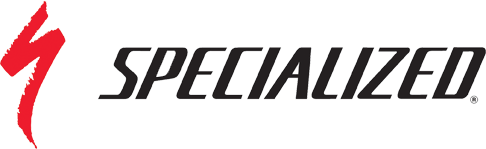
스페셜라이즈드 Specialized Bicycle Components스페셜라이즈드(Specialized Bicycle Components)는 자전거와 관련 용품을 제조하는 미국의 브랜드이다.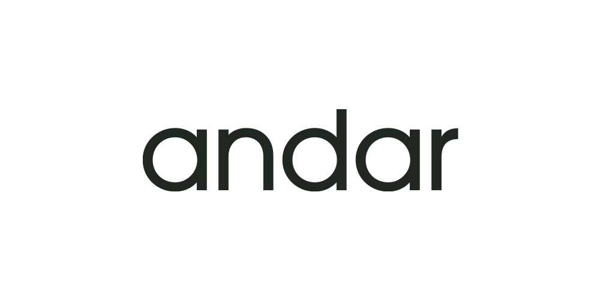
안다르 Andar안다르(Andar)는 2015년 설립된 한국의 애슬레저 브랜드로, 요가복·레깅스로 잘 알려져 있다.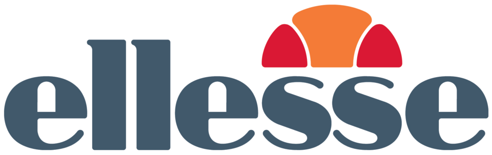
엘레쎄 Ellesse엘레쎄(Ellesse)는 1959년 이탈리아 페루자에서 설립된 스포츠 의류 브랜드이다.오 비외 캉퍼 Au vieux campeur오 비외 캉퍼(Au Vieux Campeur)는 프랑스의 아웃도어·등산용품 소매 체인이다.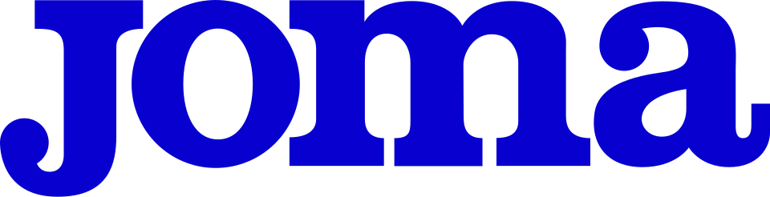
조마 Joma조마(Joma)는 스페인에 본사를 둔 운동복 제조 브랜드이다.줌바 Zumba줌바(Zumba)는 콜롬비아의 무용가이자 안무가인 알베르토 'Beto' Pérez가 창작한 피트니스 프로그램이다.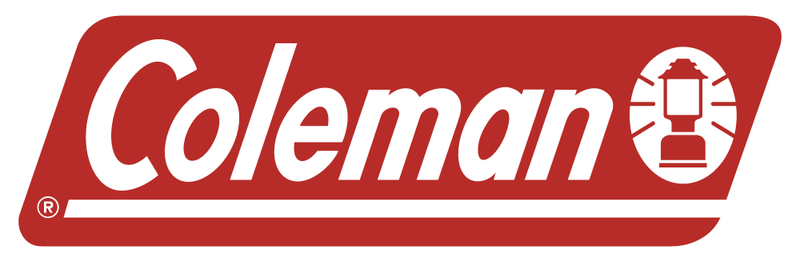
콜맨 Coleman Company콜맨(Coleman Company)은 랜턴, 휴대용 스토브, 침낭, 의자, 쿨러 등 캠핑 용품으로 가장 잘 알려진 미국의 아웃도어 레크리에이션 제품 제조사이다.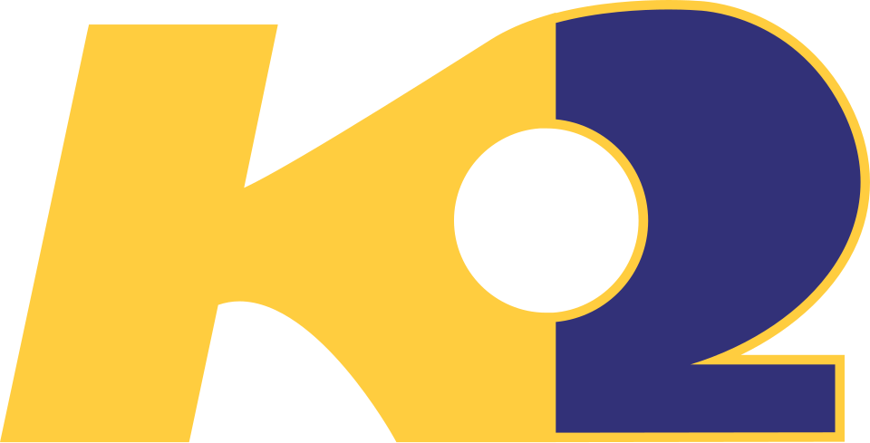
K2K2(K2 Sports)는 1962년 미국에서 설립된 스키·스노보드 중심의 스포츠용품 브랜드이다.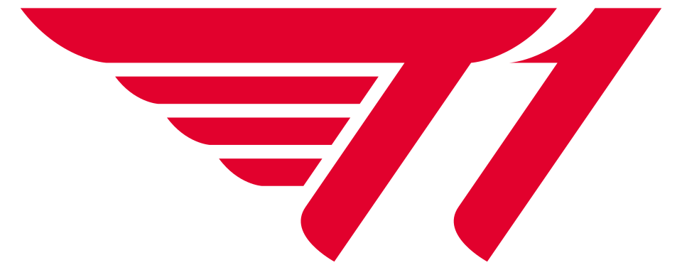
T1T1(T1)은 대한민국의 종합 프로게임단이다.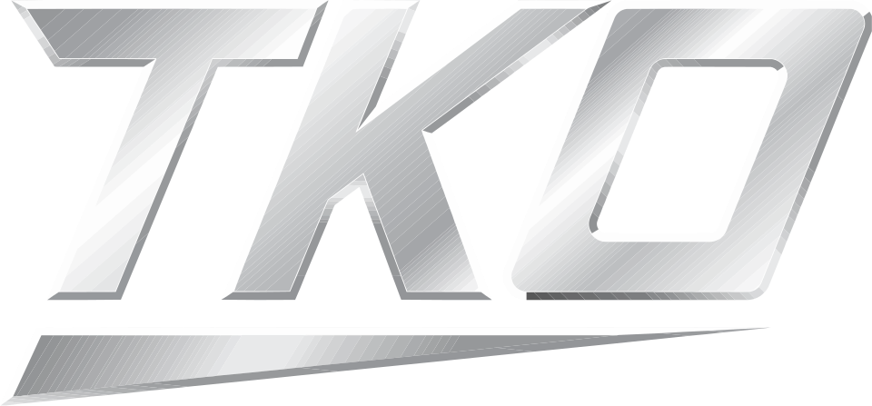
TKO Group HoldingsTKO Group Holdings는 미국 뉴욕에 본사를 둔 스포츠·엔터테인먼트 기업이다.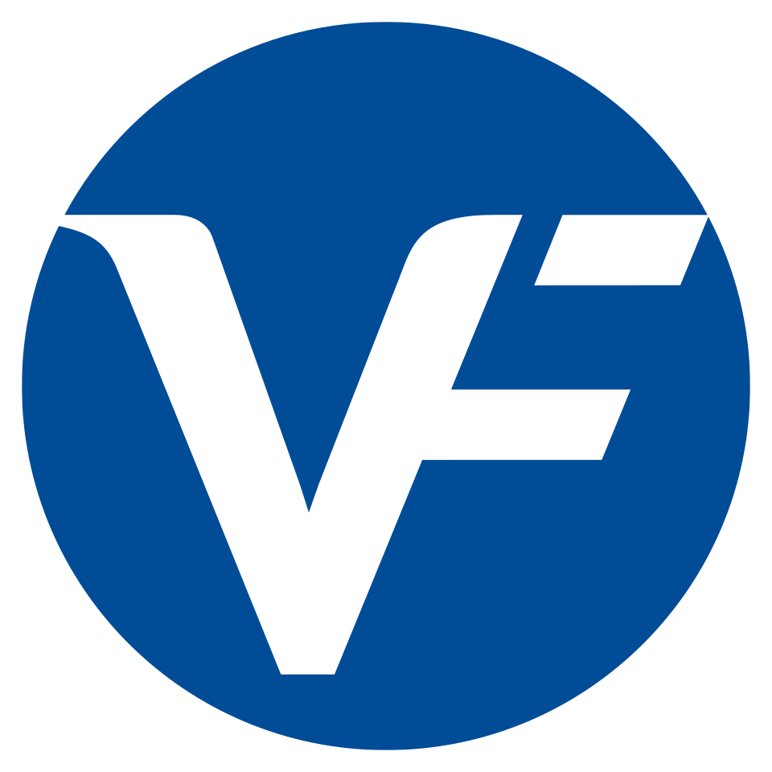
VF CorporationVF Corporation은 1899년 John Barbey가 설립한 미국의 의류·신발 기업이다.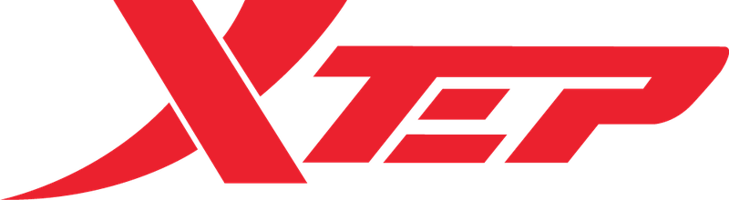
XtepXtep은 중국 푸젠성 샤먼에 본사를 둔 스포츠웨어 기업이다.